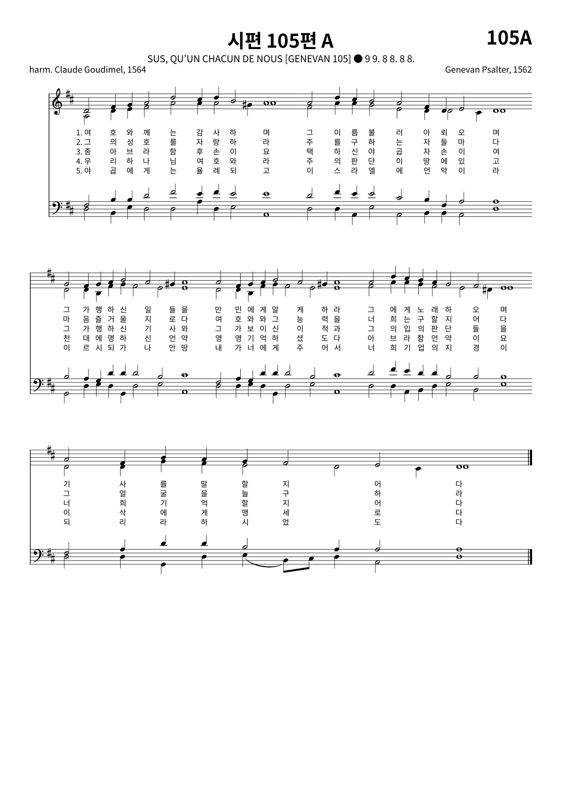

Psalm 105A
SUS, QU’UN CHACUN DE NOUS [GENEVAN 105] · 9 9. 8 8. 8 8.
English title: Oh, Thank the LORD with Great Rejoicing
Tune: Genevan Psalter, 1562 · Harmony: Claude Goudimel, 1564 · Lyrics: Korean adaptation of Psalm 105 from the Korean Revised Version (AI draft adaptation · not yet theologically reviewed) · 5 stanzas
Psalm 105 is divided into 3 tunes: A B C · This tune contains stanzas 1–5 of the Psalm 105 lyrics.
Score PDF MusicXML (for printing) MusicXML (for accompaniment, with prelude and repeats) Read Psalm 105 (Korean Revised Version)
Score
← Psalm 104B ListAccompaniment (in preparation)Psalm 105B →
Lyrics (Korean)
Stanza 1
여호와께는 감사하며
그 이름 불러 아뢰오며
그가 행하신 일들을
만민에게 알게 하라
그에게 노래하오며
기사를 말할지어다
여호와께는 감사하며
그 이름 불러 아뢰오며
그가 행하신 일들을
만민에게 알게 하라
그에게 노래하오며
기사를 말할지어다
Stanza 2
그의 성호를 자랑하라
주를 구하는 자들마다
마음 즐거울지로다
여호와와 그 능력을
너희는 구할지어다
그 얼굴을 늘 구하라
그의 성호를 자랑하라
주를 구하는 자들마다
마음 즐거울지로다
여호와와 그 능력을
너희는 구할지어다
그 얼굴을 늘 구하라
Stanza 3
종 아브라함 후손이요
택하신 야곱 자손이여
그가 행하신 기사와
그가 보이신 이적과
그의 입의 판단들을
너희 기억할지어다
종 아브라함 후손이요
택하신 야곱 자손이여
그가 행하신 기사와
그가 보이신 이적과
그의 입의 판단들을
너희 기억할지어다
Stanza 4
우리 하나님 여호와라
주의 판단이 땅에 있고
천 대에 명하신 언약
영영 기억하셨도다
아브라함 언약이요
이삭에게 맹세로다
우리 하나님 여호와라
주의 판단이 땅에 있고
천 대에 명하신 언약
영영 기억하셨도다
아브라함 언약이요
이삭에게 맹세로다
Stanza 5
야곱에게는 율례 되고
이스라엘에 언약이라
이르시되 가나안 땅
내가 너에게 주어서
너희 기업의 지경이
되리라 하시었도다
야곱에게는 율례 되고
이스라엘에 언약이라
이르시되 가나안 땅
내가 너에게 주어서
너희 기업의 지경이
되리라 하시었도다